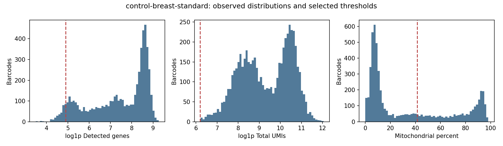
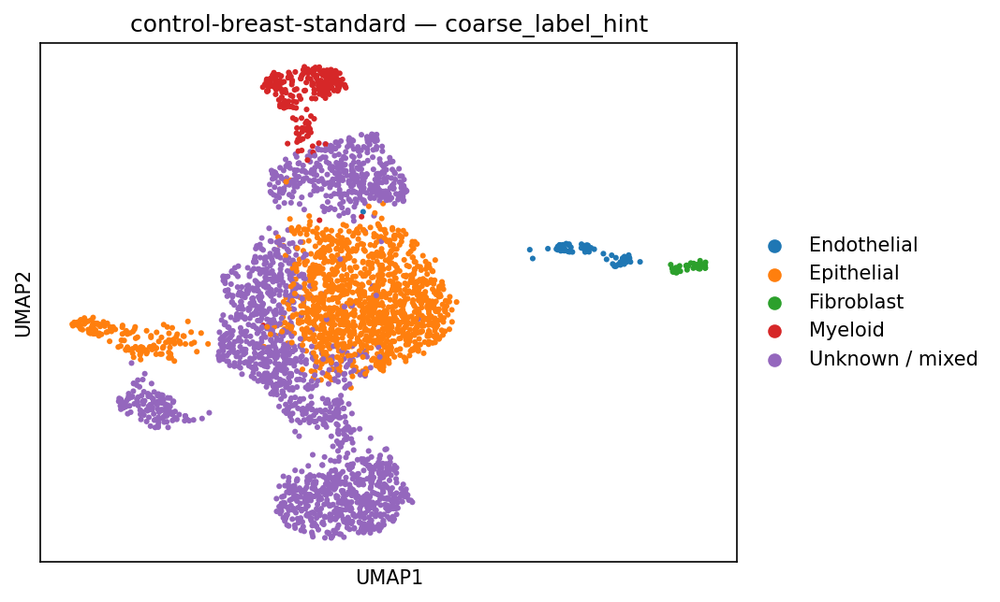

2 October 2026 · Public controls and synthetic tests · No Diana data processed
Versioned KMS-encrypted S3 custody, expiring worker access, pinned Modal runtimes, original count preservation, independent audits and failure recovery have been exercised. Source staging and output collection verify actual bytes.
All results remain provisional_hold. The breast controls fail retention and seed-stability screens. Marker hints are uncalibrated; no malignant-cell or clinical conclusion is available. These sorted breast libraries share one donor and have unknown subtype. They do not validate TNBC performance.
Diana's first run needs confirmed identity, complete capture mapping, chemistry/material and the matched reference. Review losses and uncertainty on the full-barcode checkpoint before any composition inference.
| Public control | Input cells | Retained | Seed ARI | Review screens |
|---|---|---|---|---|
| PBMC 1k v3 | 1,222 | 1,012 (82.8%) | 0.859 | All mechanical QC screens pass |
| Sorted breast IDC standard v3.1 | 5,680 | 3,536 (62.3%) | 0.635 | retention, seed_stability |
| Sorted breast IDC LT v3.1 (same donor) | 687 | 440 (64.0%) | 0.656 | retention, seed_stability |
Each source-to-checkpoint audit passes ten exact checks. SoupX estimates a diagnostic candidate; analysis still uses original counts. Neither caller accuracy nor annotation accuracy is independently established.
Breast count audit · Breast hold decision · All-barcode review-only loss table · Frozen method identity

Losses are preserved for review; failed screens remain failed.
Unknown/mixed labels and marker scores are not calibrated probabilities.32,384 paired synthetic reads → 16,384 exact raw UMIs → 16,000 exact filtered UMIs. Every expected gene/barcode count matches, PCR duplicates collapse, and all FASTQ records are checked. This toy genome tests engineering, not human cell calling. STARsolo's pinned TopCells rank edge case was caught and corrected for the synthetic fixture only; human counting uses EmptyDrops_CR and remains unqualified.
The counted-to-matrix handoff retains the upstream unqualified flag. Post-count certificates cannot silently admit pipeline-generated cell calls.
Known answer audit · Count handoff receipt · Counting environment · Public PBMC regression
PBMC3k QC decisions, UMAP coordinates, markers, cluster marker scores and reference overlap are byte-identical to the previous regression. The final scRNA test suite passes 106 tests and 12 subtests; Ruff and compilation pass.
A real upload interruption left a failed marker and no completion marker. Recovery used a fresh run ID. Bounded retries are fault-tested; expired/denied capabilities do not fall back to account credentials. Output POSTs may create multiple versions; the final manifest pins each chosen version.
No method certificate or human approval was fabricated. The earlier GSE176078 cohort remains quarantined. This review publishes only public-control summaries and synthetic engineering evidence; patient intake and outputs remain outside Git and the public browser.